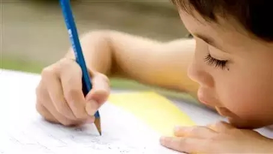

互惠动态
|
|
【暑假家长必读】美国校长的9个建议
提示：点击上方"ASC"↑免费订阅本刊
美国教育界普遍有种说法，认为孩子平时在学校的学习生活都差不多，所以长达2个多月的暑假很容易成为孩子们拉开差距的分水岭，怎样让孩子玩得开心又学得高兴呢？一起来看看美国校长给家长的9个建议吧！
放了假的孩子就像脱了缰的野马，脑子里想的除了怎么玩，还是怎么玩，所以家长需要做的第一步，就是与孩子达成共识，告诉他暑假你可以有大量的时间玩，但同时阅读和学习也是非常重要的。
操作指南：首先，我们需要倾听孩子的感受和需求，问问他暑假都有什么打算，然后再表达自己的观点，并邀请孩子和自己一起进行“脑力风暴”，写下暑假准备做的事，还可以用逃逃之前教的方法美国一年级学这些，我震惊了进行事情的优先级排序哦！
放暑假后，孩子们走出学校，有更多的时间和精力和日常生活打交道，聪明的父母大可利用这个机会给孩子上“微课”，将每天的各项活动转变成一次学习的体验。
操作指南：处处留心皆学问，在日常生活中，不仅可以教孩子一些生活技能，例如买菜、洗衣、扫地等，还能让孩子学到新的知识，比如阅读旅行指南后写家庭旅行计划，写购物清单，或者测量菜单上各种配料的用量等。
脱离学校后，孩子们有大量的自由时间，如果赖赖散散过是否太浪费？不妨想办法给孩子布置些固定的任务，让他们在规定的时间内做完。
操作指南：按照孩子的年龄，可以给他们安排一些趣味学习任务，给他们买一些关于猜字（crossword，好像美国人特别喜欢玩这个）或者数字游戏的书，布置些任务，但只需要一起设定完成时间，孩子具体什么时候做，让他们自己决定。

人在什么时候最想写作？当然是业余生活丰富，有记录欲望的时候啦，希望孩子锻炼写作能力的家长不妨在暑假试试。
操作指南：首先，不要把写作看成很枯燥的东西，你可以和孩子一起写暑假日记，记录每天的喜怒哀乐或有趣的事情，还可以给亲友写信或者明信片。当然，让孩子尝试写一本家庭菜谱，记录每天一起做的菜，包括制作过程和需要的配料等也是个不错的主意。
随着平板电脑、智能手机的日益普及，使用这些电子产品的人群也在逐渐扩大，甚至三四岁的孩子们也成为忠实拥趸，很多电脑游戏或手机应用可以帮助孩子学习，但是要注意控制孩子面对屏幕的时间。
操作指南：和孩子约定好，每次看屏幕的时间不超过20分钟，并且注意房间的光线，不要太亮也不能太暗。再设置一个固定的时间，全家人都关掉手机、电脑、电视，一起玩玩桌面游戏或者阅读，让孩子慢慢感受，没有电子产品的生活也可以很快乐。
读书不仅可以使孩子开阔视野，增长知识，培养良好的自学能力和阅读能力，还可以进一步巩固课内学到的各种知识,提高他们的认读水平和作文能力,乃至对于各个学科的学习,都有极大的帮助。
操作指南：每天至少预留15分钟的家庭阅读时间，设定每位家庭成员的 “阅读马拉松”目标，父母一起陪着读，孩子会更受这种氛围的感染。还可以带着孩子一起去附近的图书馆或书店，既增长知识，又可以“避暑”，对孩子养成良好的读书习惯也是大有裨益的哦！
没有那么多时间出国旅行？没关系，就算在家也能和孩子一起领略异国风情。我们也来“幼稚”一把，假装和孩子行走在世界每个角落吧！
操作指南：可以每周安排一个“国际夜”，每次都指定一个国家，和孩子一起做那个国家最有名的菜，学几句那个国家的语言，在地图上找到它，然后一起读一本关于这个国家的书，看看在那里的人们生活有什么不同。
如果暑假有计划家庭旅行，无论是去动物园，儿童博物馆，还是历史古迹地，都可以让学习悄悄地潜入旅行。
操作指南：旅行中有很多东西可以学，除了每个地方的风土人情外，我们还可以试着让孩子绘制旅行地图，写旅行日记，帮着大人记录行程，预定旅店，计算花费，甚至计算油耗（美国人的旅行大多数都是自驾）。
体育锻炼可谓是暑假最重要的活动，不仅可以让孩子强身健体，也能养成良好的健身习惯，爸爸妈妈也一起动起来，让亲子关系在运动中更亲密吧！
操作指南：如果孩子平时不太喜欢运动，这时候也不一定让他参加球队或其他团体体育队，我们可以和孩子一起，每天做些可以全家人一起参加的运动，比如比赛跳绳，追逐游戏，或者跑步、登山等。
美国校长洋洋洒洒的九大建议，中心思想说白了就是暑假不要瞎玩瞎混，还是得注意学习。逃爸曾调侃“不够魄力嘛，整几本暑假作业、奥数习题什么的甩出来，开学上交不就完了，搞那么多花样”。所以，千万不要以为美国学校不紧张孩子学习，只是相对于一味的学，或者纯粹的玩，他们更提倡学和玩相结合。而这恰恰是一种最能让孩子接受的状态，需要我们每位家长心领神会，也付诸行动。